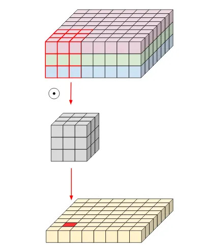
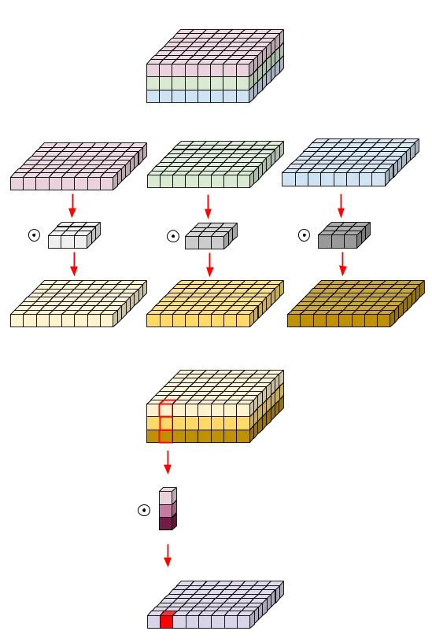
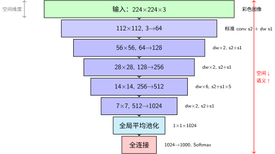

MobileNet：一个人，一把冰镐#
CBAM：哪里重要 + 什么重要 让网络学会了看重点。但有一个残酷的现实：不是每个团队都雇得起 1,000 人、买得起补给站。
你的手机只有几瓦的功耗。你的无人机只有一颗嵌入式芯片。你的浏览器里跑的模型不能超过几 MB。你不是 Google——你没有 1,024 张 TPU。
关键问题：预算几乎为零，还能爬吗？
历史背景：CNN 太"重"了#
2017 年之前，CNN 的发展方向只有一条：更深、更宽、更大。AlexNet（60M 参数）→ VGG（138M）→ ResNet（60M，但 152 层）。准确率在涨，但模型大到塞不进手机。
Andrew Howard 和 Google 的研究团队问了一个逆向的问题：如果准确率不是你唯一的追求呢？如果必须在准确率和速度之间做取舍——你该怎么设计？
2017 年，MobileNet [HZC+17] 给出了答案。核心洞察只有一个，但彻底改变了轻量化设计的游戏规则。
核心洞察：把卷积"拆开"#
卷积：发现装备 中我们学到：一个普通的 3×3 卷积同时做两件事——
空间混合：把 3×3 区域内的像素信息融合（“这块岩石的纹理是什么？”）
通道混合：把不同通道的信息融合（“纹理 + 颜色 + 边缘——这整体是什么？”）
MobileNet 说：这两件事可以分开做。而且分开做，便宜 8-9 倍。
{kind=link}

标准卷积：空间混合与通道混合同时进行#
{kind=link}

深度可分离卷积：先 Depthwise（空间混合），再 Pointwise（通道混合）#
参数量对比（假设 \(M=N=256\)）：
操作 |
计算 |
参数数量 |
|---|---|---|
标准 3×3 卷积 |
\(3 \times 3 \times 256 \times 256\) |
589,824 |
深度可分离 |
\(3 \times 3 \times 256 + 256 \times 256\) |
67,840 |
减少了 8.7 倍。 不是魔法的结果——是你把"空间混合"和"通道混合"拆开了，中间省掉了大量的交叉连接。
登山直觉
标准卷积 = 一个人既探路（空间）又做决策（通道），每一步都要综合考虑所有因素。累，慢，负重多。
深度可分离 = 两个人分工：一个人只管脚下的岩壁（Depthwise：\(3\times3\times M\)），另一个人只管"整体判断"（Pointwise：\(1\times1 \times M \times N\)）。各司其职，总负重少了近 9 倍。
两个超参数：贫穷的自由度#
MobileNet 给了你两个旋钮，让你根据自己的预算灵活调整：
超参数 |
含义 |
取值 |
效果 |
|---|---|---|---|
宽度乘数 \(\alpha\) |
每层的通道数缩放 |
(0, 1]，通常 0.25/0.5/0.75/1.0 |
\(\alpha=0.5\) → 参数和计算量减少约 4 倍 |
分辨率乘数 \(\rho\) |
输入图像分辨率缩放 |
(0, 1]，如 224/192/160/128 |
\(\rho=0.5\) → 计算量减少约 4 倍 |
这两个旋钮相乘，效果叠加：\(\alpha=0.5, \rho=0.5\) → 计算量减少约 16 倍。
极端案例
MobileNet 的最轻版本（\(\alpha=0.25\)，输入 128×128）参数量不到 0.5M——是 AlexNet 的 1/120。在 ImageNet 上仍然能达到约 50% 的准确率。
50% 准确率听起来低，但记住：这个模型可以跑在 10 年前的手机上，功耗不到 1 瓦，推理时间不到 10 毫秒。对于"这张照片里有没有人？"这种简单任务，足够了。
这就像一个人、一把冰镐、没有补给站——他爬不到 8,000 米，但他能爬到 5,000 米。而他的全部装备只占一个背包。
架构详解#
MobileNet 的骨架极其简单——每一层都是一个深度可分离卷积块。按空间分辨率分组，形成经典的金字塔结构：
金字塔视角：数据流的维度变化#

MobileNet 金字塔架构：用深度可分离卷积爬轻量路线
金字塔的核心洞察：
空间维度递减：224 → 112 → 56 → 28 → 14 → 7 → 1（与AlexNet相同路径，但每一步都靠深度可分离卷积大幅省力）
特征通道递增：3 → 64 → 128 → 256 → 512 → 1024（稳步翻倍，没有AlexNet的先升后调——更简洁的增长策略）
参数量分布：约4.2M总参数——仅AlexNet的7%，原因是每个卷积都拆成了Depthwise+Pointwise，中间省掉了大量交叉连接
14×14是中海拔大本营：6层堆叠在此——空间信息还够用，计算量又不至于太大，是性价比最高的深度投入点
为什么 14×14 处堆了 5 层？
这是 MobileNet 设计中最精妙的地方。14×14 是"中等分辨率"——既保留了足够空间信息，又不至于太大。在这个分辨率上堆深度，让网络在不增加太多计算量的前提下学到更复杂的特征组合。
就像一个登山者在中海拔建立大本营——这里氧气还够，但已经接近关键路线。在这里多待几个回合，为最后的冲顶做准备。
代码实践#
import torch
import torch.nn as nn
def conv_dw(in_channels, out_channels, stride):
"""深度可分离卷积块
两个操作：
1. Depthwise: 3×3 逐通道卷积——空间混合（见 cnn-basics）
2. Pointwise: 1×1 卷积——通道混合
参数量：3×3×in + in×out（vs 标准卷积的 3×3×in×out）
节省：约 (out-1)/(out) 的参数
"""
return nn.Sequential(
# Depthwise: 每个通道独立做 3×3 卷积
nn.Conv2d(in_channels, in_channels, kernel_size=3,
stride=stride, padding=1, groups=in_channels, bias=False),
nn.BatchNorm2d(in_channels),
nn.ReLU(inplace=True),
# Pointwise: 1×1 卷积混合通道
nn.Conv2d(in_channels, out_channels, kernel_size=1,
stride=1, padding=0, bias=False),
nn.BatchNorm2d(out_channels),
nn.ReLU(inplace=True),
)
class MobileNet(nn.Module):
"""MobileNet V1 实现
核心设计：深度可分离卷积——把空间混合和通道混合拆开
超参数：
- alpha: 宽度乘数 (0.25, 0.5, 0.75, 1.0)
- 参数量 α=1.0 时约 4.2M，α=0.25 时约 0.5M
"""
def __init__(self, num_classes=1000, alpha=1.0):
super(MobileNet, self).__init__()
def conv_layer(in_c, out_c, stride):
"""每一层的通道数都乘以 alpha"""
in_c = int(in_c * alpha)
out_c = int(out_c * alpha)
return conv_dw(in_c, out_c, stride)
self.model = nn.Sequential(
# 第一层用标准卷积（输入只有 3 通道，depthwise 没意义）
nn.Conv2d(3, int(32 * alpha), 3, stride=2, padding=1, bias=False),
nn.BatchNorm2d(int(32 * alpha)),
nn.ReLU(inplace=True),
# 深度可分离卷积层
conv_layer(32, 64, 1), # 112×112
conv_layer(64, 128, 2), # 56×56
conv_layer(128, 128, 1),
conv_layer(128, 256, 2), # 28×28
conv_layer(256, 256, 1),
conv_layer(256, 512, 2), # 14×14
# 在 14×14 处堆 5 层——中等分辨率下的特征深化
conv_layer(512, 512, 1),
conv_layer(512, 512, 1),
conv_layer(512, 512, 1),
conv_layer(512, 512, 1),
conv_layer(512, 512, 1),
conv_layer(512, 1024, 2), # 7×7
conv_layer(1024, 1024, 1),
# 全局平均池化替代全连接——进一步省钱
nn.AdaptiveAvgPool2d(1),
)
self.fc = nn.Linear(int(1024 * alpha), num_classes)
def forward(self, x):
x = self.model(x) # (B, C, 1, 1)
x = x.view(x.size(0), -1) # (B, C)
x = self.fc(x) # (B, num_classes)
return x
# 参数量验证
model_full = MobileNet(alpha=1.0)
model_half = MobileNet(alpha=0.5)
model_quarter = MobileNet(alpha=0.25)
print(f"α=1.0: {sum(p.numel() for p in model_full.parameters()):,} 参数")
print(f"α=0.5: {sum(p.numel() for p in model_half.parameters()):,} 参数")
print(f"α=0.25: {sum(p.numel() for p in model_quarter.parameters()):,} 参数")
总结#
维度 |
内容 |
|---|---|
核心洞察 |
把卷积拆成 Depthwise（空间） + Pointwise（通道）——参数量减少 8-9 倍 |
哲学 |
准确率不是唯一的目标。在给定的计算预算下最大化效果 |
两个旋钮 |
\(\alpha\)（宽度）+ \(\rho\)（分辨率）——灵活适配从手机到服务器的任何设备 |
历史意义 |
开启了 CNN "瘦身"的整个方向——MobileNetV2/V3、ShuffleNet、EfficientNet 都受其启发 |
登山者笔记：不是每个攀登者都雇得起大队人马。一个人、一把冰镐——但如果你知道哪些装备真正必要、哪些可以舍弃，你仍然能爬到足够高的地方。
下一步#
MobileNet 告诉你：极致的省钱，也能爬。 但如果你不是"几乎没钱"，而是"有一笔预算，想花在刀刃上"呢？
深度、宽度、分辨率——三个维度不是独立的。能不能按一个最优比例一起调？
参考文献
Andrew G Howard, Menglong Zhu, Bo Chen, Dmitry Kalenichenko, Weijun Wang, Tobias Weyand, Marco Andreetto, and Hartwig Adam. Mobilenets: efficient convolutional neural networks for mobile vision applications. arXiv preprint arXiv:1704.04861, 2017.
贡献者与修订历史
查看详细修订记录
-
ea7e1062026-06-16 - Heyan Zhu: fix: cross-ref syntax, formulas, code, and structure across 5 chapters -
dc35df22026-06-14 - Heyan Zhu: refactor: unify into two-chapter mountain-climbing narrative